本轮已归档。查看新的 AI Logo 候选 →
Little Stone Still Here
Logo studies08 October 2026
水流经过，小石仍在原处。

声音远去，回应仍在继续。
光改变方向，仍然向前。
墙有了开口，因为有人在。

把名字，写成一个安静的签名。
A / Still
一块被时间磨圆的石头，低处留着一道水流经过的痕迹。周围的流动改变了它的轮廓，却没有带走它：学习、创作与生活持续发生，小石依旧在这。
适合成为长期使用的个人标识。往后可让一束光沿着内侧刻痕走过，石头本身保持不动。
偏实体、温柔；以轮廓记住“小石”，含义最贴近昵称。
B / Echo
一个小石核和两道错开的回声。线条并不封闭，给后来的人留下接续的位置；作者暂时不在，留下的声音仍能抵达别人。
适合音乐、文字与交流共同构成的个人网站。后续可以让外圈缓慢展开，中心保持稳定。
偏流动、辽阔；五款里最有音乐感。
C / Through
一道路径经过柔角三角体，改变方向后继续延伸。折射不靠彩虹装饰表现，而是让光真正切开轮廓，成为图形结构的一部分。
适合与首页棱镜和导航光路相连。可先显出光的路径，再让剩余形体被照见。
偏概念、方向感；与现有首页叙事联系最直接。
D / Threshold
一块厚实的墙体让出一个开口，小石静静留在里面。边界开始允许靠近，空出来的部分反而成为存在的证明。
适合强调个人空间和访客留痕。后续可把负形开口延伸为页面入口或留言展开的遮罩。
偏空间、陪伴；更像一个可以走近的地方。
E / LSSH
L、S、S、H 四个字母压缩为紧凑的双行字母标。圆润转折保持共同节奏，两枚 S 像连续的呼吸，让身份直接来自名字本身。
适合导航、页脚、文档落款与个人头像。后续可从双行字母标展开为完整网站名称。
偏作者、签名；优先用于 32px 及以上，小尺寸需进一步光学校正。